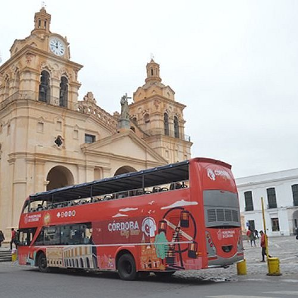
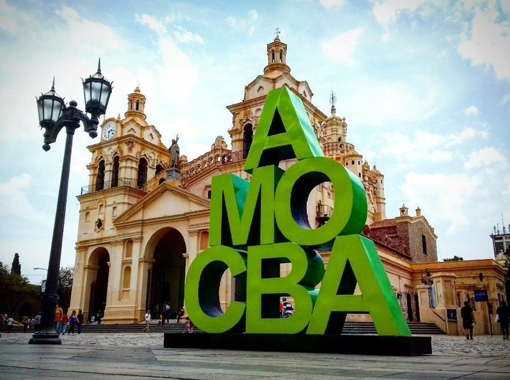

En Córdoba Turismo somos una agencia especializada en tours y experiencias en la ciudad de Córdoba, Argentina, y sus alrededores. Diseñamos recorridos que combinan historia jesuítica, cultura urbana y paisajes serranos, brindando propuestas pensadas para que cada visitante viva una experiencia auténtica e inolvidable.
Entre nuestras opciones se destacan el City Tour por el centro histórico, excursiones a La Cumbrecita y Villa General Belgrano, recorridos por Alta Gracia y las Estancias Jesuíticas, además de experiencias en el Valle de Traslasierra y turismo enológico en Colonia Caroya.
Nuestro compromiso es brindar un servicio seguro, organizado y personalizado, para que descubrir Córdoba sea una experiencia única.

